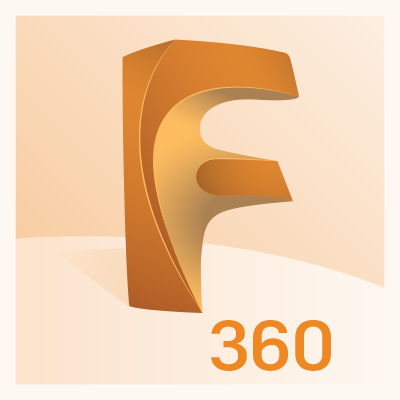
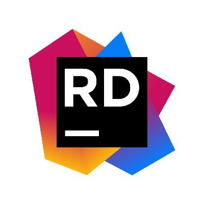
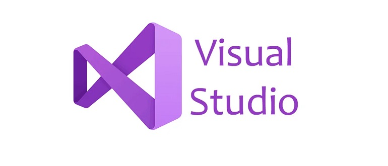

Logiciels utilisés
Un tel projet nécessite de nombreux outils et services afin de bien fonctionner, voici ci-dessous ceux que nous avons utilisés.
Fusion 360
Fusion 360 nous a permis de modéliser en 3D l'ensemble des pièces du robot.
Rider et Visual Studio Code
 C'est deux environnements de développement nous ont permis de faciliter la mise en œuvre du projet.
Git et GitHub

Git nous permet de gérer les différentes versions de notre projet et GitHub nous offre des espaces collaboratifs et des outils complémentaires pour le suivi du projet.
Arduino IDE
Ce logiciel permet de téléverser du code vers la carte arduino du robot.